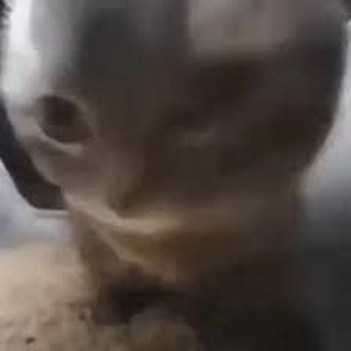

The "Chipi Chipi Chapa Chapa" cat meme is a lighthearted and catchy phenomenon that has taken the internet by storm. In this meme, a cat is depicted with its mouth open in what appears to be mid-chirp or meow, accompanied by the playful phrase "Chipi Chipi Chapa Chapa."
The charm of this meme lies in its simplicity and universality. The image captures a moment of feline communication that is both endearing and relatable to cat owners and enthusiasts worldwide. Whether the cat is expressing excitement, curiosity, or simply demanding attention, the meme's infectious energy resonates with audiences across social media platforms.
The "Chipi Chipi Chapa Chapa" meme has inspired countless variations and creative interpretations, from playful remixes of the original image to humorous captions and memes overlaying the cat's open mouth with amusing text or graphics.
Overall, the "Chipi Chipi Chapa Chapa" cat meme is a delightful celebration of the unique and often comical ways in which our feline friends communicate with us. It's a reminder of the joy and laughter that cats bring into our lives, both online and off.
Animal: Cat
color: Gray
Cat Name: None
Nickname: "Chipi Chip Chapa Chapa Cat"
